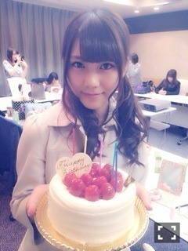
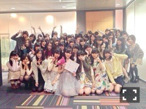
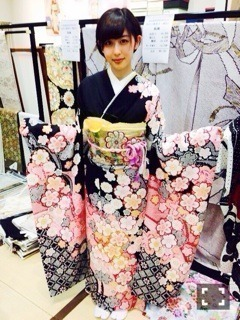
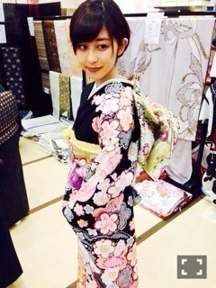

| 2014/03 23 Sun | 着物姿(´>∀<｀)ゝ |
ちはるーむへようこそ(o^^o)
本当は昨日更新したかったんだけど...
ちょっと眠くて(´･_･`)
昨日は、バレッタ最後のイベント！
お茶会がありました〜


すごくすごく楽しかったし
みんなでわいわいできたよっ\( ˆoˆ )/
そして川後のお誕生日っ♡
おめでとう〜！！！！！
いつもクールっぽいけどたまに甘えてくる姿が可愛らしくて、
たまにどんくさくて、でもそこがまた可愛くて。笑
川後だいすきだよ(﹡ˆ ˆ﹡)

ケーキと、ずーと、スリーショット。
そしてちーむDショット☻

ずー(｡-_-｡)ぶれぶれ(｡-_-｡)笑
あたしら楽しそう(｡-_-｡)♡
そしてななつんの卒業日。
話す機会はあんまりなかったのが残念だったけど(´･_･`)
挨拶がすごくハキハキしてたのが印象的！
これからも、乃木坂の経験を活かして
頑張ってほしいな☻
応援してます！\( ˆoˆ )/
卒業おめでとう！

(Ӧ)(ӧ)(Ӧ)(Ӧ)(ӧ)〜♬(Ӧ)(ӧ)(Ӧ)(Ӧ)(ӧ)〜♬
今日は乃木どこの収録参加してきました\( ˆoˆ )/
いつ放送だろうな〜

探してみてね！！
ひよこまあや♡
このまあやがひよこに見えてしょうがない！！！笑
久しぶりに会ったとき、
楽屋に入った途端、
ちーちゃんー♡(﹡ˆ ˆ﹡)
って駆け寄ってきてくれたまあやが可愛くてだいすきよ♡
(Ӧ)(ӧ)(Ӧ)(Ӧ)(ӧ)〜♬(Ӧ)(ӧ)(Ӧ)(Ӧ)(ӧ)〜♬
そういえば最近、お母さんとお母さんの姉とおばあちゃんと着物屋さん行ったら
ちょっと早いんだけど振袖の試着してみました♡


着物がすごく可愛くてハッピーでした♡(﹡ˆ ˆ﹡)
率直に......どうでしょう(｡-_-｡)？
似合うかな？？(｡-_-｡)
ばいるんっ
るんるんっ
ちはるんっ
(´>∀<｀)ゝ
コメント(264)
2014/03/23 23:12